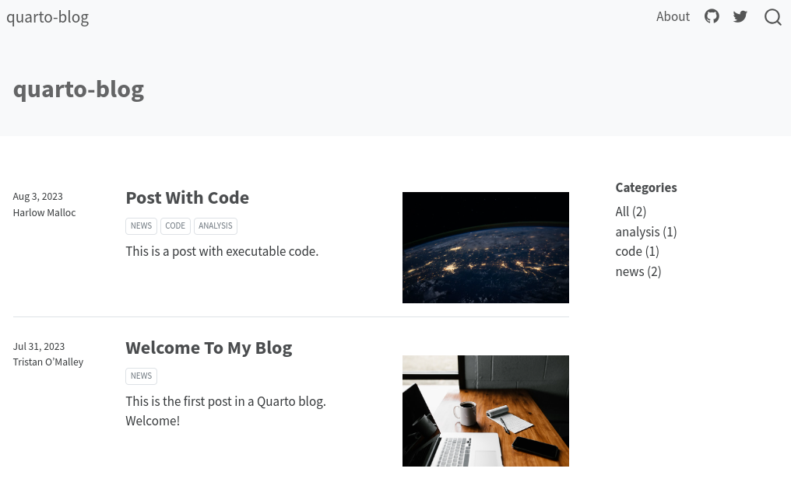
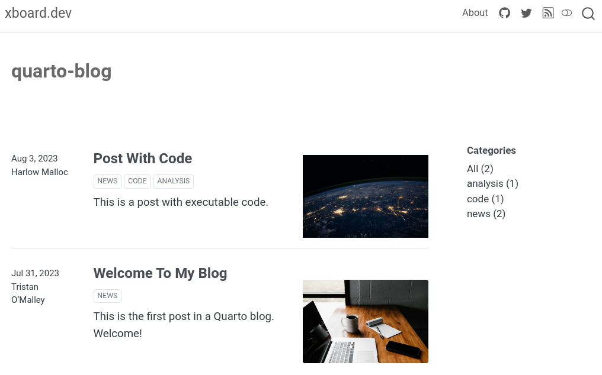
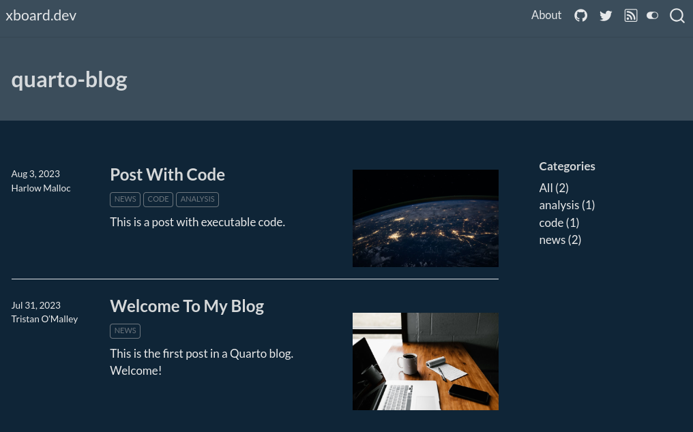
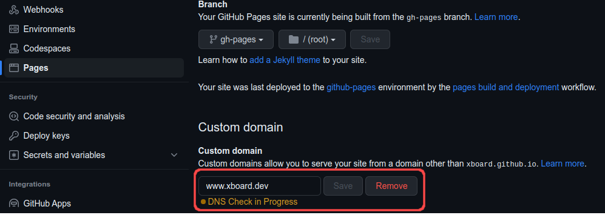
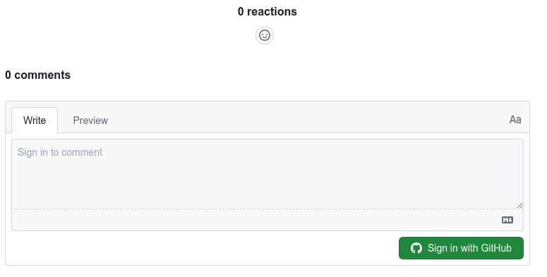
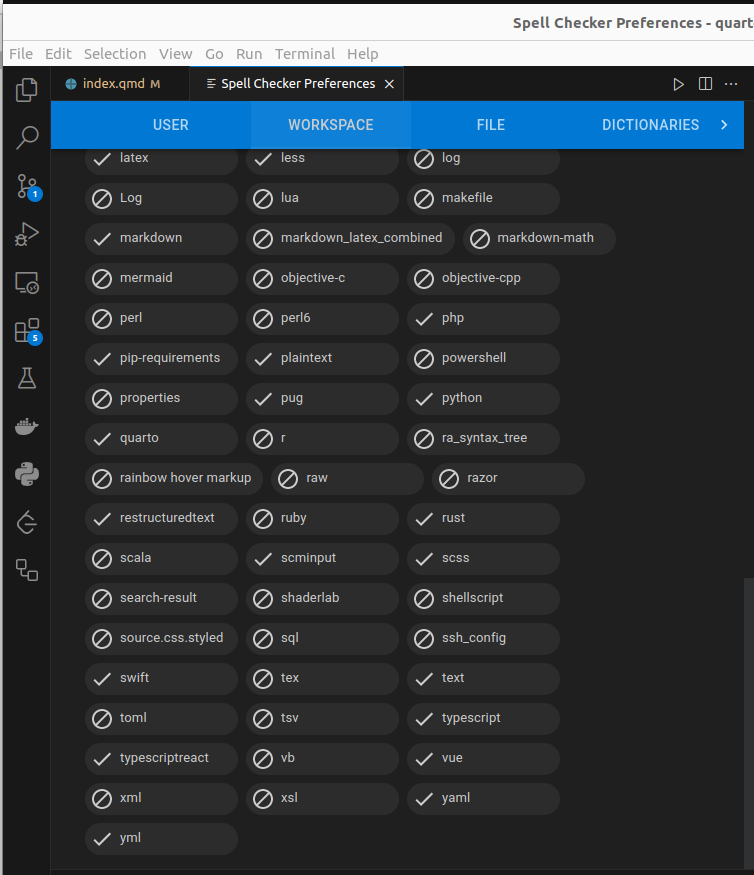

Why migrate?
In a post published on September 3, 2022, Hamel Husain announced that he has rebuilt nbdev on top of Quarto. In the blog post, he explained that there have been new pieces of technology like Jupyter Book and Quarto, which are both fabulous. Husain explained that he ended up using Quarto for nbdev, because of its shared vision with nbdev and the fantastic ongoing support from JJ Allaire and the rest of the Posit team. He also recommended that people trying to blog with notebooks should be using Quarto, instead of Fastpages.
What is Quarto?
Quarto is an open-source, web-based platform designed to simplify the creation and publication of scientific documents, including data-driven reports, technical articles, and more, with features such as:
- Compatibility with a wide range of programming languages, including R, Python, and Julia;
- Integration with popular web publishing platforms such as GitHub pages, Netlify among others;
- Support for a broad range of document outputs, including LaTeX, PDF, and HTML;
- Extensive customizability with built-in templates and reusable components; and
- Built-in support for code snippets and data visualizations.
Installing Quarto
Go to the get started page on the quarto website to download the installer file. I’m on Ubuntu, so for me that’s a .deb file. I install it from the command line:
sudo dpkg -i quarto-1.3.433-linux-amd64.debCreate my blog project, called quarto-blog:
quarto create-project quarto-blog --type website:blogthen enter the project and preview it:
cd quarto-blog/
quarto preview quarto-blog
Migrating fastpages’s posts to Quarto
Follow instructions in nbdev’s Migrating from Fastpages tutorial.
In my case:
cd quarto-blog
cp -r ../fastpages-blog/_notebooks/* posts
cp -r ../fastpages-blog/_posts/* posts
cp ../fastpages-blog/images/* posts
cp -r ../fastpages-blog/images/copied_from_nb/* posts
nbdev_migrate --path postsSetup general blog configuration
Rename blog title, description and add favicon
Edited section website in file _quarto.yml updating title and description and then adding site-url, favicon and google analytics configuration:
_quarto.yml
website:
title: "xboard.dev"
favicon: favicon.ico
site-url: https://xboard.dev
description: "Everything data and programming."
google-analytics: "G-5FL5R0TTQ6"Setup themes for light and dark mode
After playing a bit with some of the default themes available I have chosen litera and superhero for light and dark modes respectively.
_quarto.yml
theme:
light: litera
dark: superhero
css: styles.css

Adding canonical tag into the <head> section
I have followed this post from Matt Bowers adding the following python script:
add-canonicals.py
"""
This script adds canonical url tags to pages in a Quarto website.
Place the script in the root of the project and run it post render.
author: Matt Bowers - https://github.com/mcb00
from https://github.com/quarto-dev/quarto-cli/discussions/3976#discussioncomment-6376014
"""
from xml.dom.minidom import parse
from urllib.parse import urlparse
import warnings
site_dir = '_site'
sitemap_file = 'sitemap.xml'
document = parse(site_dir + '/' + sitemap_file)
locs = document.getElementsByTagName('loc')
urls = [l.firstChild.nodeValue for l in locs]
for url in urls:
path = site_dir + urlparse(url).path
canonical_tag = f'<link rel="canonical" href="{url}" />'
# Read in the file
with open(path, 'r') as file :
filedata = file.read()
if filedata.__contains__('<link rel="canonical"'):
warnings.warn(f'{path} already contains canonical tag. Skipping this file.')
else:
print(f'{path} adding canonical tag.')
# Replace the target string
filedata = filedata.replace('</head>', canonical_tag +'\n</head>')
# Write the file out again
with open(path, 'w') as file:
file.write(filedata)and them add a post-render configuration pointing to this script in my project:
_quarto.yml
project:
post-render:
- "python add-canonicals.py"Git/Github
Create .gitignore file
Created .gitignore file with the following content:
.gitignore
/.quarto/
/_site/
/_freeze/sInitialize Git and upload to repository in Github
Initialize local repository:
git init
git add .
git commit -m "Migrated blog: first commit"Then go to Github and create a new public repository named quarto-blog and in your local repository directory type in the terminal:
git remote add origin https://github.com/xboard/quarto-blog.git
git push -u -f origin masterSetup github pages
I have followed this article from the official quarto documentation on how to publish you content to a gh-pages branch.
My old blog was running in github-pages and I want to keep using it.
Add custom domain to github pages
First remove the domain in repository fastpages-blog

then add domain to quarto-blog repository github page.
Creating Conda’s environment
Quarto supports executable Python code blocks within markdown. This allows you to create fully reproducible documents and reports—the Python code required to produce your output is part of the document itself, and is automatically re-run whenever the document is rendered.
Therefore it is crucial to have a reproducible Python execution environment and for such I have chosen Miniconda. This are the steps I did to create my virtual environment and to save its configuration in github.
- Create and activate the environment
conda create -n 'quarto_env'
conda activate quarto_env- Install data-science libraries
conda install pandas seaborn matplotlib plotly pip scrapy statsmodels jupyter jupyterlab xgboost scikit-learn seaborn lightgbm "pymc>=5" jax[cpu] tsfresh sktime prophet gradio plotly scipy statsmodels arviz xarray pytorch fastai streamlit lime shap interpret yellowbrick pypdf langchain accelerate bitsandbytes transformers scrapy - Export all libraries installed in environment to
environment.ymlfile
conda env export --name quarto_env --file environment.yml- Add and push to github
git add environment.yml
git commit -m 'Add conda environment.yml'You can see the generated environment.yml file in github here.
Default configuration for blog posts
This setup properties that will be inherited by all posts.
posts/_metadata.yml
# options specified here will apply to all posts in this folder
# freeze computational output
# (see https://quarto.org/docs/projects/code-execution.html#freeze)
1freeze: true
# Enable banner style title blocks
2title-block-banner: true
# Default for table of contents
toc: true
3toc-title: Contents
toc-location: left
toc-expand: 2
# Default author
author:
- name: Flavio Regis de Arruda
url: https://xboard.dev
# Default fields for citation
4citation: false- 1
- computational documents should never be re-rendered during a global project render
- 2
- create a banner style title block
- 3
- table of content title
- 4
- do not show citation metadata.
Enabling commenting
I have chosen Giscus app to leverage Github Discussions as commenting platform in my posts.
_quarto.yml
- 1
- the Github repo that will be used to store comments.
- 2
- found using https://giscus.app/
- 3
- discussion category in Github Discussions
- 4
- found using https://giscus.app/
after this at the bottom of every post you will see the Giscus integration in action:

VSCode
I love to use Visual Studio Code to write my blogs posts and I was very pleased to discover it has an excellent Quarto extension.
Installing VS Code Quarto extension
To install the Quarto extension type (Ctrl+P), type:
ext install quarto.quartoand press enter.
Some of the features this extensions includes:
- Integrated render and preview for Quarto documents.
- Syntax highlighting for markdown and embedded languages
- Completion and diagnostics for YAML options
- Completion for embedded languages (e.g. Python, R, Julia, etc.)
- Commands and key-bindings for running cells and selected lines.
- Live preview for LaTeX math as well as Mermaid and Graphviz diagrams
Adding snippet
Enabling inline suggestion
Set Snippet suggestions to inline as recommended here.
Adding spell checker
Installed Code Spell checker.
and them after clicking the spell button at the button at the editor bottom right I enabled its support to Quarto on my workspace.

Conclusion
In summary, Quarto provides me with a powerful and versatile platform to write my technical blog posts as a Data Scientist and Python programmer. Its integration with Jupyter notebooks, support for multiple programming languages, customization options, collaboration features, and rendering capabilities make it the ideal choice for me to create high-quality, detailed, and engaging technical articles. With Quarto, I can focus on delivering content while enjoying a seamless and efficient writing experience.
In this post I have described in details all the steps that I did to migrated my posts from fastpages and how I configured Quarto to support the blog you are reading now.
If you were also using fastpages and intend to migrate, I hope it not only helps you in your decision process but also speeds up the setup of your new Quarto blog.